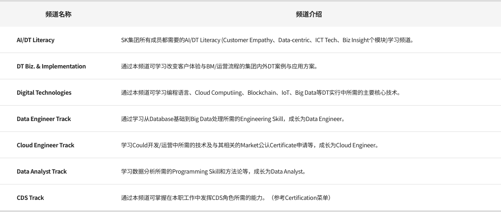

DT College
“小组的Deep Change在我们手中!”
掌握Digital Skill，了解客户和行业，为引领SK Deep Change的成员在
DT College开设的课程。
DT College开设的课程。

Digital Transformation是从客户角度出发，应用Digital技术，改变现有的运营流程和Business Model，甚至是文化、工作方式，是SK所追求的Deep Change的核心执行因素。
>DT College不仅提供推进DT的根本，即以Data/Cloud为中心的Digital主要技术学习机会，还可以广泛学习国内外有关创造新的客户体验、创新BM/运营流程、改变工作方式的商业案例。市场中，长期有为主要Digital技术提供Certificate申请支持的项目。

全部课程
Self-directive
Intensive
Data Engineer Track
- 理解与应用Scala
- 理解与应用NoSQL
- 理解与应用Hadoop
- SQL
Badge
Cloud Engineer Track
- Certification
- Cloud技术
- Cloud开发基础
- Cloud基础（Azure）
Data Analyst Track
- 应用机器学习
- Data Visualization
- 数据收集/加工
- Statistics & Analytics
- 编码For Big Data分析
DT Technologies
- 编程语言（R，Python）
- Cloud Computing
- Block chain
- IoT
- Big Data
Badge
CDS Track
CDS Track (Intensive Course，2周)
- 现场应用Project
- 机器学习
- Data Visualization
- EDA及数据加工
- Data Pre-Processing
- Python基础语法
DT Biz. & Implementation
- Tech & Biz Talk（未来Tech论坛）
- Zoom-in Mobility Biz
- DT & BM创新 Case study
- 全球Tech Event
- SK，遇见DT
Badge
AI/DT Literacy
- Customer Empathy
- Data-Centric Approach
- 理解ICT Tech
- Biz Insight